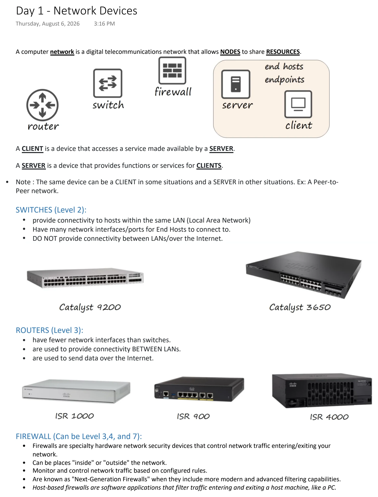
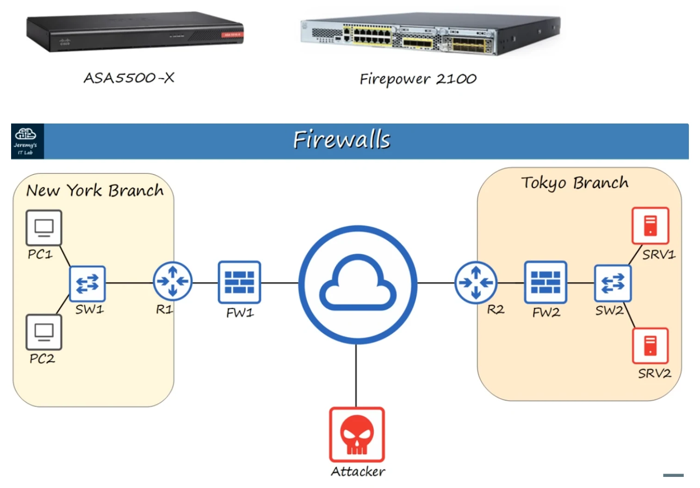

Network Devices
Download original PDF

Text view — Network Devices
Extracted from the original export. Diagrams and some formatting appear in the notes above.
Day 1 - Network Devices Thursday, August 6, 2026 3:16 PM A computer network is a digital telecommunications network that allows NODES to share RESOURCES. A CLIENT is a device that accesses a service made available by a SERVER. A SERVER is a device that provides functions or services for CLIENTS. • Note : The same device can be a CLIENT in some situations and a SERVER in other situations. Ex: A Peer-to- Peer network. SWITCHES (Level 2): • provide connectivity to hosts within the same LAN (Local Area Network) • Have many network interfaces/ports for End Hosts to connect to. • DO NOT provide connectivity between LANs/over the Internet. ROUTERS (Level 3): • have fewer network interfaces than switches. • are used to provide connectivity BETWEEN LANs. • are used to send data over the Internet. FIREWALL (Can be Level 3,4, and 7): • Firewalls are specialty hardware network security devices that control network traffic entering/exiting your network. • Can be places "inside" or "outside" the network. • Monitor and control network traffic based on configured rules. • Are known as "Next-Generation Firewalls" when they include more modern and advanced filtering capabilities. • Host-based firewalls are software applications that filter traffic entering and exiting a host machine, like a PC. Day 1 - Network Devices Thursday, August 6, 2026 3:16 PM A computer network is a digital telecommunications network that allows NODES to share RESOURCES. A CLIENT is a device that accesses a service made available by a SERVER. A SERVER is a device that provides functions or services for CLIENTS. • Note : The same device can be a CLIENT in some situations and a SERVER in other situations. Ex: A Peer-to- Peer network. SWITCHES (Level 2): • provide connectivity to hosts within the same LAN (Local Area Network) • Have many network interfaces/ports for End Hosts to connect to. • DO NOT provide connectivity between LANs/over the Internet. ROUTERS (Level 3): • have fewer network interfaces than switches. • are used to provide connectivity BETWEEN LANs. • are used to send data over the Internet. FIREWALL (Can be Level 3,4, and 7): • Firewalls are specialty hardware network security devices that control network traffic entering/exiting your network. • Can be places "inside" or "outside" the network. • Monitor and control network traffic based on configured rules. • Are known as "Next-Generation Firewalls" when they include more modern and advanced filtering capabilities. • Host-based firewalls are software applications that filter traffic entering and exiting a host machine, like a PC.